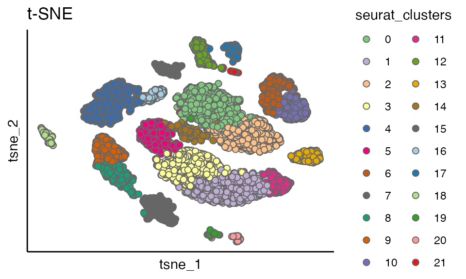
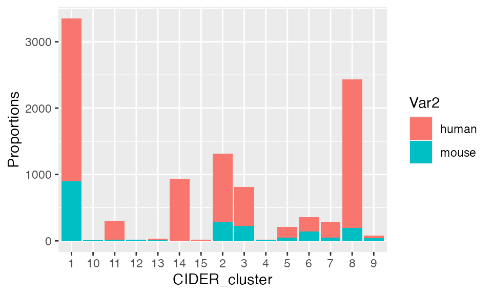

Introduction
This vignette performs asCIDER, a meta-clustering method, on a cross-species pancreas dataset. AsCIDER is aimed to achieve the clustering task in data confounded by unwanted variables. In this scenario, the unwanted variable is species effects.
asCIDER is short for assisted CIDER, assisted by the prior batch-specific annotations or clustering results.
Pancreas data
This data\(^1\) contain cells from human (8241 cells) and mouse (1886 cells).
data("pancreas_counts") # count matrix
data("pancreas_meta") # meta data/cell information
seu <- CreateSeuratObject(counts = pancreas_counts, meta.data = pancreas_meta)
table(seu$Batch)
#>
#> human mouse
#> 8241 1886Exam if data are confounded
Prior to use CIDER (or other integration methods for clustering) it is important to exam if clustering will be confounded by the cross-species factors.
Her we first perform the conventional Seurat\(^2\) clustering pipeline.
seu <- NormalizeData(seu, verbose = FALSE)
seu <- FindVariableFeatures(seu, selection.method = "vst", nfeatures = 2000, verbose = FALSE)
seu <- ScaleData(seu, verbose = FALSE)
seu <- RunPCA(seu, npcs = 20, verbose = FALSE)
seu <- RunTSNE(seu, reduction = "pca", dims = 1:12)Confounded dimension reduction
The PCA and t-SNE plots both showed that the data are confounded by species.
The scatterPlot function is used to generate dimension reduction figures. It takes input of a Seurat object (seu here), the name of reduction (pca and tsne here), the variable deciding dot colours (Batch here) and the title of plots. See more information by ?scatterPlot
p1 <- scatterPlot(seu, "pca",colour.by = "Batch", title = "PCA")
p2 <- scatterPlot(seu, "tsne",colour.by = "Batch", title = "t-SNE")
plot_grid(p1, p2)
Confounded clustering results
seu <- FindNeighbors(seu, dims = 1:12)
#> Computing nearest neighbor graph
#> Computing SNN
seu <- FindClusters(seu)
#> Modularity Optimizer version 1.3.0 by Ludo Waltman and Nees Jan van Eck
#>
#> Number of nodes: 10127
#> Number of edges: 352709
#>
#> Running Louvain algorithm...
#> Maximum modularity in 10 random starts: 0.9149
#> Number of communities: 22
#> Elapsed time: 1 seconds
scatterPlot(seu, "tsne",colour.by = "seurat_clusters", title = "t-SNE") 
res <- data.frame(table(seu$seurat_clusters, seu$Batch))
ggplot(res, aes(fill=Var2, y=Freq, x=Var1)) +
geom_bar(position="stack", stat="identity") + xlab("CIDER_cluster") + ylab("Proportions")
asCIDER
Prepare initial clusters
asCIDER uses existing within-batch clustering results. Here we concatenate the batch ID and the within-batch cluster ID to obtain cluster-specific groups (i.e. initial clusters).
seu$initial_cluster <- paste(seu$Group, seu$Batch, sep = "_")
table(seu$initial_cluster)
#>
#> acinar_human activated_stellate_human activated_stellate_mouse
#> 932 275 14
#> alpha_human alpha_mouse b_cell_mouse
#> 2241 191 10
#> beta_human beta_mouse delta_human
#> 2455 894 592
#> delta_mouse ductal_human ductal_mouse
#> 218 1033 275
#> endothelial_human endothelial_mouse epsilon_human
#> 214 139 17
#> gamma_human gamma_mouse immune_other_mouse
#> 241 41 8
#> macrophage_human macrophage_mouse mast_human
#> 39 36 25
#> quiescent_stellate_human quiescent_stellate_mouse schwann_human
#> 160 47 10
#> schwann_mouse t_cell_human t_cell_mouse
#> 6 7 7Calculate of IDER similarity matrix
The function getIDEr calculate the IDER-based distance matrix.
By default, it will use the column called "initial_cluster" as initial clusters, and "Batch" as batch. If you are using columns other than this two, please revise these two parameters.
For this step, you can choose to use parallel computation by setting use.parallel = TRUE or not (default use.parallel = FALSE). The default number of cores used for parallel computation is detectCores(logical = FALSE) - 1.
ider <- getIDEr(seu,
group.by.var = "initial_cluster",
batch.by.var = "Batch",
downsampling.size = 35,
use.parallel = FALSE, verbose = FALSE)Visualise the similarity matrix
groups <- c("alpha","beta","delta", "gamma","ductal","endothelial", "activated_stellate", "quiescent_stellate", "macrophage")
idx1 <- paste0(groups, "_human")
idx2 <- paste0(groups, "_mouse")
pheatmap::pheatmap(
ider[[1]][idx1, idx2],
color = inferno(10),
border_color = NA,
display_numbers = TRUE,
cluster_rows = FALSE,
cluster_cols = FALSE,
width = 7,
height = 5,
cellwidth = 22,
cellheight = 22
)
Perform final Clustering
Next we put both Seurat object and the similarity matrix list into finalClustering. You can either cut trees by height (set cutree.by = 'h) or by k (set cutree.by = 'k). The default is cutting by the height of 0.45.
The final clustering results are stored in Colume cider_final_cluster of Seurat object metadata and can be extracted using seu$cider_final_cluster.
seu <- finalClustering(seu, ider, cutree.h = 0.45)
head(seu@meta.data)
#> orig.ident nCount_RNA nFeature_RNA Batch Group
#> mouse1_lib1.final_cell_0001 mouse1 11003 2994 mouse beta
#> mouse1_lib1.final_cell_0002 mouse1 10701 3565 mouse ductal
#> mouse1_lib1.final_cell_0003 mouse1 9445 2401 mouse delta
#> mouse1_lib1.final_cell_0004 mouse1 8193 2865 mouse schwann
#> mouse1_lib1.final_cell_0005 mouse1 7323 2355 mouse delta
#> mouse1_lib1.final_cell_0006 mouse1 8504 2637 mouse beta
#> Sample RNA_snn_res.0.8 seurat_clusters
#> mouse1_lib1.final_cell_0001 mouse1 9 9
#> mouse1_lib1.final_cell_0002 mouse1 13 13
#> mouse1_lib1.final_cell_0003 mouse1 7 7
#> mouse1_lib1.final_cell_0004 mouse1 21 21
#> mouse1_lib1.final_cell_0005 mouse1 7 7
#> mouse1_lib1.final_cell_0006 mouse1 8 8
#> initial_cluster CIDER_cluster
#> mouse1_lib1.final_cell_0001 beta_mouse 1
#> mouse1_lib1.final_cell_0002 ductal_mouse 2
#> mouse1_lib1.final_cell_0003 delta_mouse 3
#> mouse1_lib1.final_cell_0004 schwann_mouse 4
#> mouse1_lib1.final_cell_0005 delta_mouse 3
#> mouse1_lib1.final_cell_0006 beta_mouse 1Visualise clustering results
plot_list <- list()
plot_list[[1]] <- scatterPlot(seu, "tsne", colour.by = "CIDER_cluster", title = "asCIDER clustering results")
plot_list[[2]] <- scatterPlot(seu, "tsne", colour.by = "Group", title = "Ground truth of cell populations")
plot_grid(plotlist = plot_list, ncol = 2)
res <- data.frame(table(seu$CIDER_cluster, seu$Batch))
ggplot(res, aes(fill=Var2, y=Freq, x=Var1)) +
geom_bar(position="stack", stat="identity") + xlab("CIDER_cluster") + ylab("Proportions")